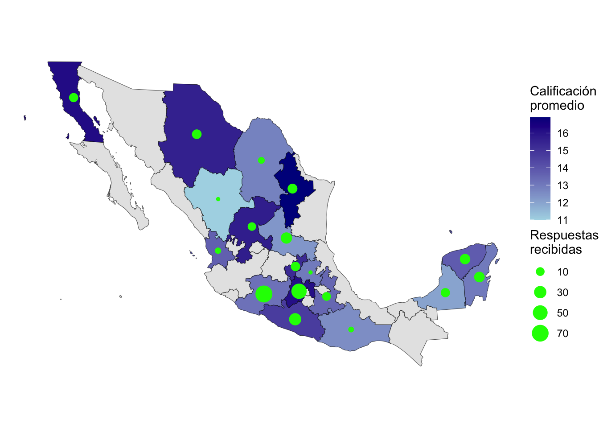

Tablero de Evaluación de Impacto
Monitoreo en Tiempo Real - FAO
Situación a nivel nacional
Datos con corte al 2026-07-09
A continuación se muestran los datos por entidad federativa y a nivel nacional sobre la evaluación presentada por las personas. El cuestionario consta de 22 preguntas, divididas en dos módulos: agrícola y pecuario (con 11 preguntas cada uno).
En total, se han registrado 312 respuestas. El promedio general obtenido por las personas capacitadas es de 14.34.
Respuestas obtenidad por entidad federativa
Warning: st_centroid assumes attributes are constant over geometriesWarning: Removed 14 rows containing missing values or values outside the scale range
(`geom_point()`).
Las capacitaciones han sido impartidas, de acuerdo con las características del territorio, disponibilidad de recursos y accesibilidad, por tipo de modalidad. El promedio de las personas que tomaron la capacitación es (de acuerdo con la modalidad):
Presencial: 15
Virtual: 14.6
Híbrido: 14.7
Sin capacitación: 13.3
Por módulo (agrícola, pecuario), los resultados también pueden compararse por tipo de modalidad. Se observa que, a nivel nacional, los resultados en el módulo pecuario son más bajos que los registrados para el módulo agrícola.
El mapa de calor se interpreta conforme a la fila (estado) y columna (pregunta). Los colores más oscuros (morado), representan un mayor número de respuestas correctas para la pregunta señalada en la columna o al pasar el cursor sobre el gráfico. Por ejemplo, la primera fila, primera columna, señala que, en Zacatecas, el 100% de las personas que respondieron el cuestionario contestaron correctamente la pregunta 1, sobre cómo se calcula el rendimiento.
Estadísticas por estado
Importante: seleccione un estado para visualizar los gráficos correctamente.